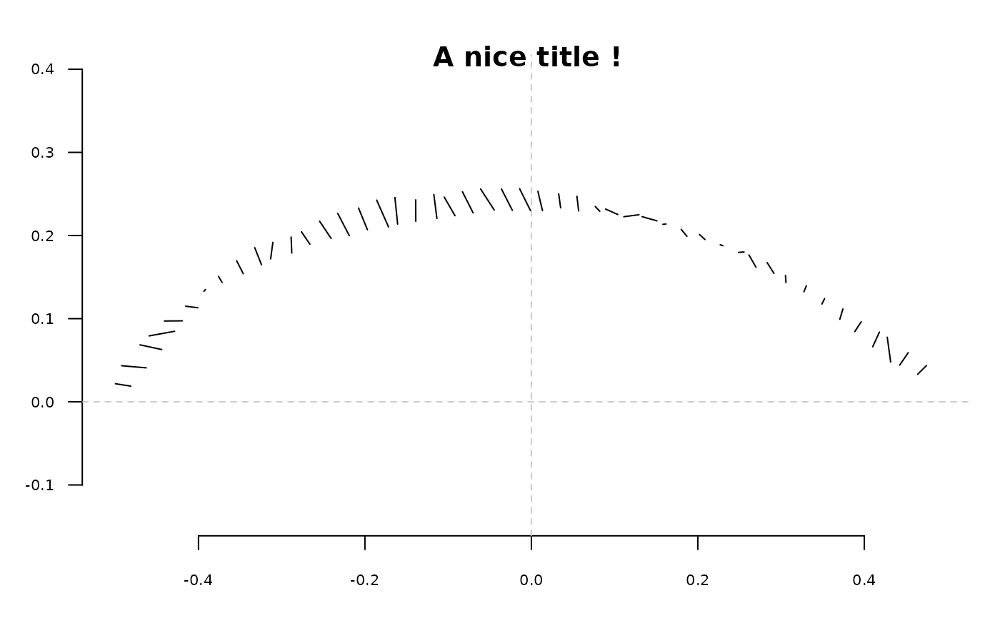

Plots (lollipop) differences between two configurations
Source:R/gr-domesticplotters.R
coo_lolli.RdDraws 'lollipops' between two configurations.
See also
Other plotting functions:
coo_arrows(),
coo_draw(),
coo_listpanel(),
coo_plot(),
coo_ruban(),
ldk_chull(),
ldk_confell(),
ldk_contour(),
ldk_labels(),
ldk_links(),
plot_devsegments(),
plot_table()
Examples
coo_lolli(coo_sample(olea[3], 50), coo_sample(olea[6], 50))
title("A nice title !")
